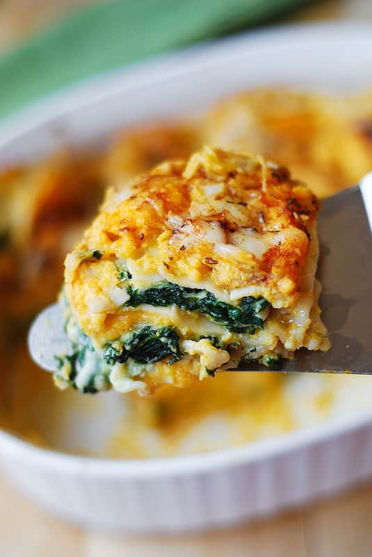

Summer Squash Lasagna

A description of the dish
Steps
- Prepare a baking dish - I used a casserole dish 11 inches x 8.5 inches x 3 inches deep. Grease the lasagna dish lightly with olive oil spray. Spread ⅓ of butternut squash filling on the bottom of the dish. Sprinkle lightly with mozzarella cheese. Top with cooked lasagna noodles without overlapping (I used 3 noodles).
- Spread half of spinach filling over the noodles. Top lightly with Mozzarella cheese. Top with cooked noodles.
- Spread another layer (⅓) of butternut squash mixture, then sprinkle lightly with Mozzarella cheese. Top with cooked noodles.
- Spread the remaining half of spinach filling over the noodles. Top lightly with Mozzarella cheese. Top with the final layer of cooked noodles.
- Spread a generous amount of butternut squash filling (the remaining ⅓) over this final layer of noodles, sprinkle with grated Parmesan and remaining mozzarella cheese (about ½ cup of mozzarella). Generously sprinkle the cheese with Italian seasoning, paprika, basil.
- Cover the baking dish with foil and bake for 30 min. Remove foil and bake additional 10 minutes.